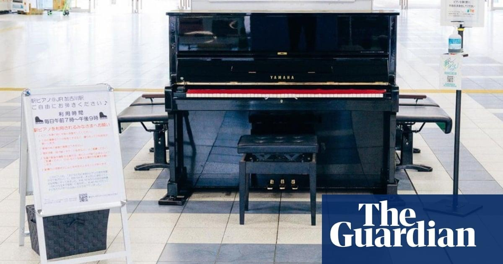

Agony and ivory: Japan removes street piano after disruptive performancesAuthorities in a Japanese city have removed a street piano, saying some took tinkling the ivories too far by playing for longer than the 10-minute limit or too loudly. Local media reported that officials in Kakogawa, in the west of the country, have removed the instrument from the main railway station concourse only six months after it was put there for the public to entertain passing commuters. Some of the musicians who played the instrument – acquired from a local kindergarten – were apparently guilty of enjoying themselves a little too much. City officials said too many had exceeded the 10-minute limit on renditions – with one man reportedly playing for an hour – while others had broken rules on “singing loudly” or had played “at great volume”, even during station announcements, much to the irritation of some commuters. After requests to rein in their artistic fervour went unheeded, the city decided the piano would sound its final note at 9pm this Sunday, the public broadcaster NHK said. TV reports showed accomplished pianists seamlessly performing intricate passages of music, while a young boy steadily worked his way through Beethoven’s Ode to Joy. While some rail passengers will no doubt be celebrating, others mourned the piano’s disappearance. “Pianos are entertaining and put a smile on people’s faces,” a teenage girl told NHK. “I just hope other players have good manners so street pianos at other stations don’t have to be removed.” A boy who had just serenaded a passersby said he was “very sad” to see the piano go, but glad that he had been given the opportunity to play it. “I hope street pianos are installed all over Japan,” he said. The instrument may not be silent for long, however. Kakogawa officials told NHK they had not ruled out moving it to a location where it would not clash with station announcements, or making it available to street musicians for a limited period. |
 |